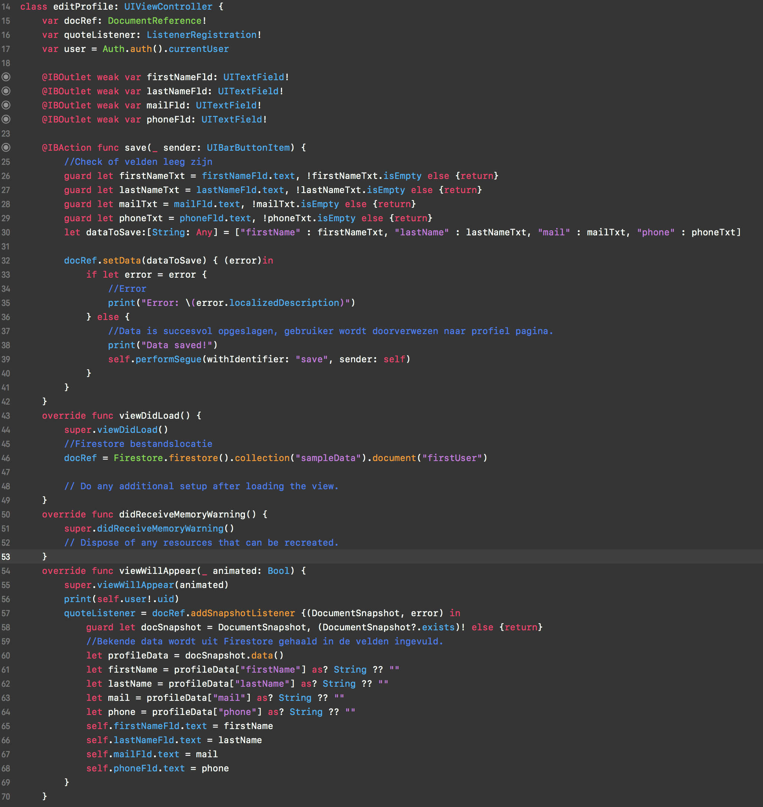

Fitness iOS app
Voor hardware en data heb ik een eerste opzet van een iPhone app gemaakt. Deze heb ik gekoppeld aan Firebase en Firestore. Het is nu mogelijk om in de app in te loggen met Firebase auth. Zodra Firebase teruggeeft dat het inloggen succesvol is.
Het doel van voor mij is een eerste aanraking met Xcode en Swift een eenvoudige en soepel werkende app te maken.
Om dit realiseren heb ik eerst CocaoPods geïnstaleerd. Een progamma vergelijkbaar met npm. Dit progamma instaleert en onderhoudt de zogenaamde 'pods'(in principe gewoon libraries). Volgens heb ik de Firebase pods geïnstaleerd. Nadat dit werkte kon ik de app gaan bouwen. Na eerst de UI gemaakt te hebben heb ik het inlogsysteem geprogameerd.
Nadat ik dit werkende had heb ik de algemene profiel pagina geprogameerd. Hierin wordt data uit de Firestore DB opgehaald en realtime geupdated.
Verder heb ik nog een pagina gemaakt waar de gebruiker de data kan aanpassen. Dit wordt ook weer in realtime geupdated.
Een demonstratie
Hoewel ik nog een paar dingen functionered zou willen krijgen (zoals het daadwerkelijk koppelen van de profieldata aan de juiste userID) kijk ik zeer positef terug op dit project, ik zou daarom ook in de toekomst meer met iOS willen gaan werken..